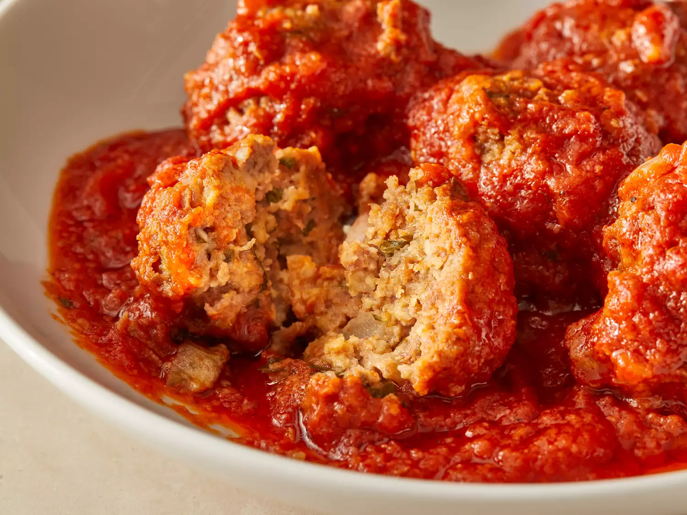

Meatballs

A bowl of fresh meatballs
This easy crockpot meatballs recipe can be prepared in a slow cooker for a great hot meal at the end of the day.
Serve with hot cooked spaghetti noodles.
Ingredients
- 1 ½ pounds ground beef
- 1 ¼ cups Italian seasoned bread crumbs
- 1 medium yellow onion, chopped
- 2 cloves garlic, minced
- ¼ cup chopped fresh parsley
- 1 egg, beaten
- 1 (28 ounce) jar spaghetti sauce
- 1 (16 ounce) can crushed tomatoes
- 1 (14.25 ounce) can tomato puree
Steps
- Gather all ingredients.
- Place ground beef, bread crumbs, onion, garlic, parsley, and egg in a large bowl; mix well until evenly combined, then shape into 16 meatballs.
- Pour spaghetti sauce and crushed tomatoes into the slow cooker; stir in tomato purée. Place the meatballs into the sauce mixture.
- Cover and cook on Low for 6 to 8 hours.
- Enjoy!